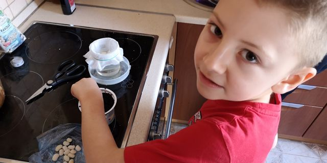
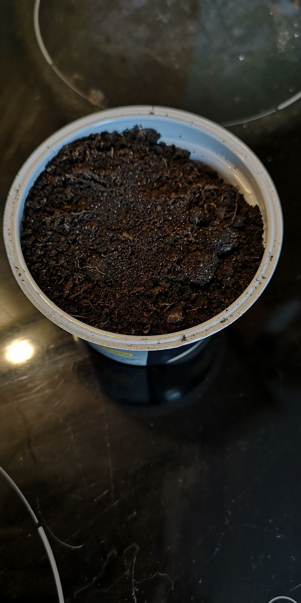
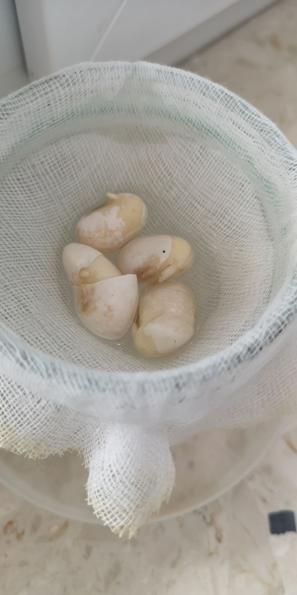
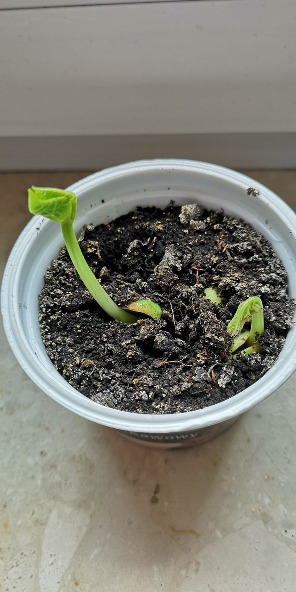
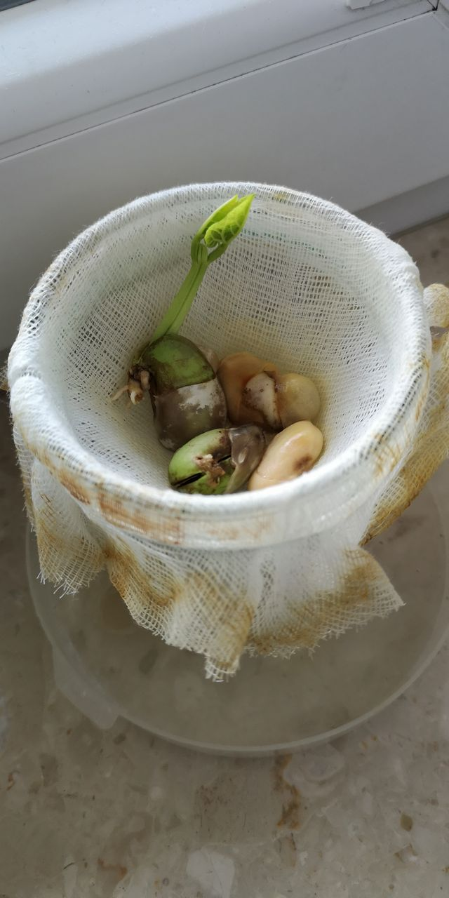
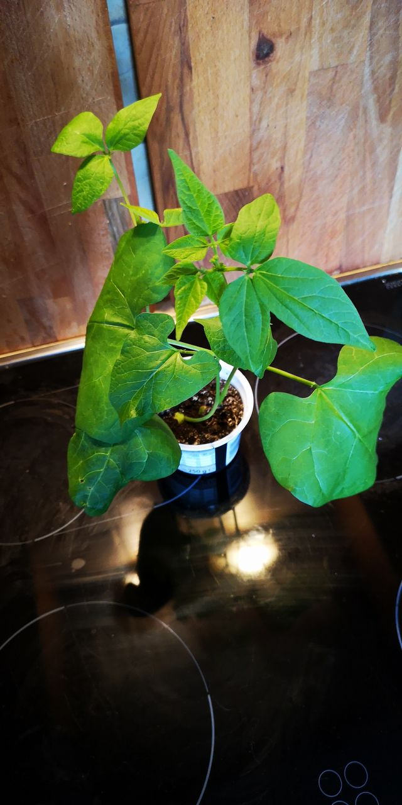
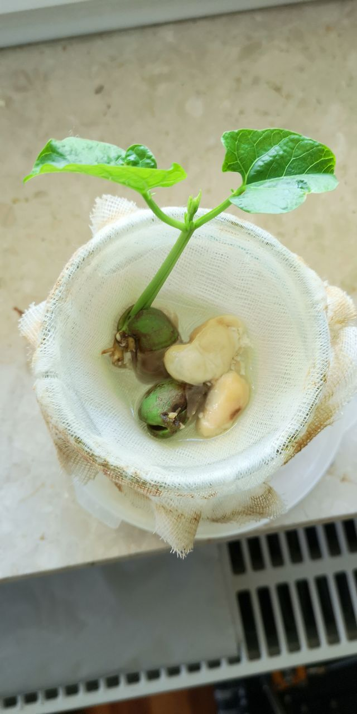
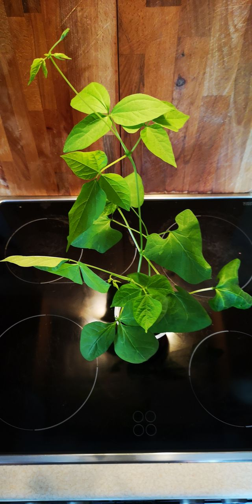

Hodowla fasoli
Dzień 1 - 18.04.2020
Kuba zakłada hodowlę fasoli. Kilka ziarenek umieszcza na gazie w słoiku. Kilka innych umieszcza w pojemniku z ziemią.
 
Dzień 7 - 25.04.2020
Fasola w słoiku dopiero kiełkuje. Fasola w pojemniu z ziemią ma już pierwsze listki.
 
Dzień 14 - 2.05.2020
Fasola w słoiku ma pierwsze listki. Fasola w pojemniu z ziemią ma już 18cm.
 
Dzień 17 - 5.05.2020
Fasola w słoiku ma już duże liście. Fasola w pojemniu z ziemią urosła na 40cm.
 